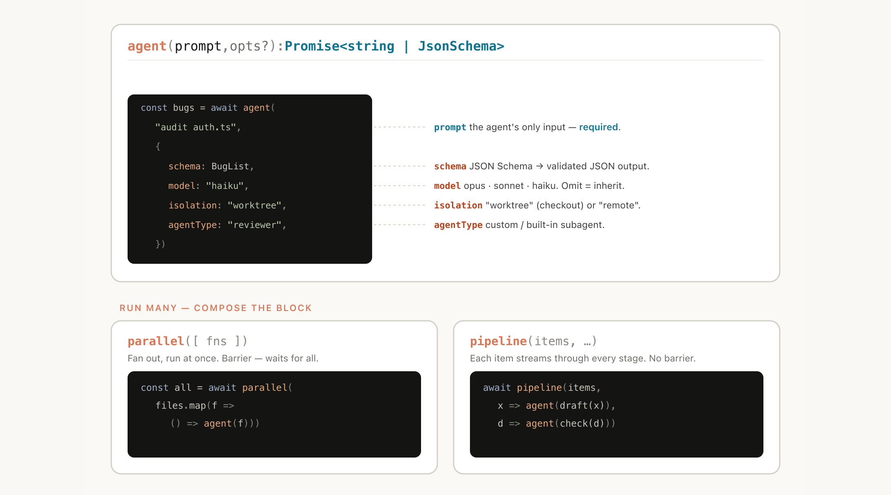
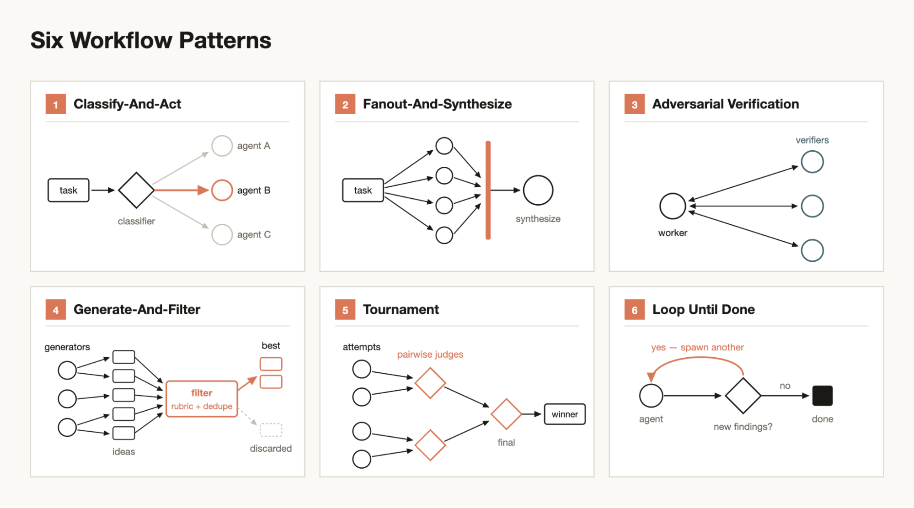
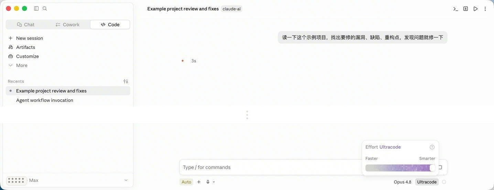

技术分享 · 30′ 主讲 + 5′ Q&A
同一个模型，
为什么不同 agent 差这么多
从报文拆 agent 运行 [system prompt / tools / workflow / goal...]
不做体感评测，直接看请求、响应和工具链
先投个票——
觉得 Claude Code 更聪明的？
觉得 Codex / Cursor 更顺手的？
我们从来不是在比模型，
是在比另一样东西。
Harness = Agent - Model
先把三个词拆开
Model
只算这一轮
读当前上下文,生成下一段文本或一次工具调用。
Agent
把模型放进循环
模型要工具 → 执行工具 → 结果回填 → 继续下一轮。
Harness
把循环工程化
决定它能看什么、能调什么、怎么验证、何时停。
①出厂人设与 PromptSystem Prompt 改动史
②工具接口与编辑格式tools schema / apply_patch / Edit
③输入与上下文Hi 首包 / IDE 注入 / 长会话压缩
④权限与运行环境允许弹窗 / OS 沙箱 / CLI 边界
⑤控制流与编排subagent / Goal / Workflow
⑥推理档位thinking / xhigh
后面每页都落回这个框: 不是散点案例,而是在拆同一套 harness。
全场投票 · 先猜,再揭
Claude Code 的代码里，
真正“问模型下一步干啥”的核心 loop 占多少？
超过 50%主要代码都在调模型
30% 左右模型 loop 和工程各一半
不到 10%核心 loop 很小,大头是 harness
1.6%
其余 ~98% 是工程基建：权限、上下文压缩、工具、会话管理。
核心，只是一个简单的 while 循环。
一句 “Hi” 抓包 · 5′
你在 agent 里发一条消息，
会烧多少 token？
先猜一句 “Hi” 的首包开销。
真实抓包 · 5′
3.3 万
Claude Code 新开 Session，只发一句 “Hi”：首包创建缓存约 33,131 tokens。
请求输入本身是 3,154 tokens，“Hi” 只是报文里很小的一角。
Claude Code
POST /v1/messages
3,154 input / 13 output
约 98KB 请求体，37 个工具 schema
Codex
WEBSOCKET /v1/responses
10,032 input 预热包
17,792 input / 14 output 回答包
看点
不是 “Hi” 贵，是 agent 把系统提示、工具、环境和会话策略一起发过去。
数据源：
本仓库抓包样本 trace_hi_claude.json / trace_hi_codex.json。
Claude 首包拆开 · 2′
一句 “hi”，报文里到底塞了什么？
→ Request Body
POST /v1/messages?beta=true · Content-Length 98,368
model · claude-opus-4-8
messages[2] · user + 注入 system
user.content: ① system-reminder / 项目上下文 · ② text: "hi" + cache_control ttl=1h
system message: 可用 subagent / 背景能力清单
system[3] · 出厂提示 + harness / environment 规则
其中主系统段约 5,853 chars,并带 1h cache_control
tools[37] · 只放 schema 清单,不展开工具正文
模型靠这些 schema 知道能调用什么、参数怎么填
runtime · max_tokens 64,000 · thinking adaptive · stream true
← Response SSE / Usage
200 · text/event-stream · stop_reason=end_turn
message_start返回 model / role / usage 壳
content_delta“Hi! How can I help you today?”
message_delta本轮结束,无 tool call
message_stopSSE 流关闭
3,154input
33,131cache create · 1h
0cache read
13output
实际上下文 = 3,154 + 33,131 + 0 = 36,285 tokens
拆 Harness · 14′–27′
System Prompt 的改动史，
就是官方踩坑史
Claude Code
Claude Code
- 2.1.141 → 2.1.1422026-05-14TaskCreate · TaskGet · TaskList · TaskUpdate · owner · blockedBy从“记一份 todo”变成任务系统。任务可以被查询、认领、更新、标记依赖，复杂工作开始可调度。
- 2.1.153 → 2.1.1542026-05-28Harness · Memory · Agent · Workflow · system-reminder · hooks从长 prompt 变成模块化 harness。权限、记忆、hook、子代理、workflow 都被写成可执行边界。
- 2.1.202 → 2.1.2032026-07-07Monitor · worktree path · teammate · background · stdout events从单线程交互助手走向后台 runner。它能监听日志、切 worktree、和 teammate 协作，把长任务挂起来跑。
Codex
- 0.114.0 → 0.115.02026-03-16spawn_agent · sub-agent · model routing · effort · openai-docs从单 agent 做到底，变成主 agent 会拆旁路任务，按任务选择子代理、模型和推理档位。
- 0.124.0 → 0.125.02026-04-24Frontend guidance · Playwright screenshots · code review · apply_patch从“能改代码”升级到“要验体验”。前端审美、截图校验、review 输出和编辑纪律都前置成默认规范。
- 0.132.0 → 0.133.02026-05-21tool_search · deferred tools · GoalService · complete · blocked从一次性塞满工具，变成按需发现工具；Goal 也从一句目标，变成 complete/blocked 的状态机。
工具与编辑格式层 · 3′
apply_patch / diff 风格——模型描述“删什么、加什么、上下文在哪”
Edit / 精确替换风格——old_string 要能在原文里准确定位
“同一个模型”一旦换了壳，
看到的动作语言就变了。
输入与上下文 · 长会话压缩 · 2.5′
越聊越笨,不是它累了——
是压缩把记忆吃了
- 忘了半小时前定好的约定,用回默认做法
- 重复问已经回答过的问题,把否决过的方案再提一遍
- 引用“我们之前讨论过 X”——X 其实已被压缩掉,记忆变成幻觉
上下文是稀缺资源，要预算化管理
输入与上下文 · 输入组装 · 1.5′
Prompt 不是直接送进模型，
会先被“上下文编译”
环境输入
cwd、打开文件、选区、git diff、项目记忆。
隐藏脚手架
system reminder、工具 schema、压缩摘要、权限提示。
所以“同样的 prompt”进模型前，
可能已经是三份不同的 prompt bundle。
实践判断：别先问“它为什么没懂”，先问“它到底看见了什么”。
权限与运行环境 · 2.5′
事事请示 vs 闷头就干，
是“设计”出来的性格
93%
用户平均批准率——“点允许”几周就变机械动作,人肉监督名存实亡
−84%
OS 级沙箱让权限弹窗下降——轻 + 隔离不是偷懒,是设计
权限设计的目标是减少打断，而非增加确认
控制流与编排 · 1′
控制流：
谁在替模型推进任务？
agent loop
模型给 tool call → harness 执行 → 结果回填 → 再问模型。
subagent
把一小段任务丢进独立上下文,主 agent 只拿最终结论。
goal / workflow
外层保存目标或脚本,决定继续、并发、验证和收口。
重点不是“多了一个脑子”，而是循环被谁组织。
推理档位 · 45″
推理档位：
同一模型，也有档位
高档位 / xhigh
慢、贵,适合规划、复杂排查和高风险编辑。
报文视角
界面不一定露出,但请求里能看到 thinking / reasoning / max tokens。
它改变“这一轮想多深”，不负责“整个任务怎么跑”。
控制流与编排 · Codex Goal
模型负责什么
读当前上下文,做一轮推理,产出下一步文本或工具调用
Goal harness 负责什么
保存目标、空闲续跑、检查是否完成,卡住时把控制权交还人
它解决的是：没人继续追问时，任务还能按目标推进。
控制流与编排 · Claude Code Workflow


所以 Ultracode 不是“换了一个更聪明的模型”,而是把更高推理档位和 workflow harness 编排绑成一个入口。
控制流与编排 · 真实案例
一句真实 prompt，触发了一套 workflow

关键不是“prompt 写得多长”，而是 Claude Code Ultracode 判断任务需要先探索、再复核，于是自行触发 workflow。
控制流与编排 · 播放 workflow
从一句话到两层 agent 网络
④ 点播放 · 看 81 个 agent 两层长出来
第一层:11 个 find agent · 等待播放
真实例子 · 模型真相
成本被挪到了
执行层
Opus 4.8 / xhigh
1 个编排者
理解需求、拆分 workflow、决定两层 find → verify 怎么跑。
Haiku 4.5
81 个执行 agent
11 个 find agent 找问题；70 个 verify agent 独立复核。
成本结构
3,640,435 tokens 全烧在 Haiku 上，约等于同量 Opus 的 1/15 成本。
省下的是模型成本，
变薄的是验证厚度。
六块，一图收拢
①出厂人设与 Prompt✓ System Prompt 改动史
②工具接口与编辑格式✓ tools schema / apply_patch / Edit
③输入与上下文✓ Hi 首包 / IDE 注入 / 长会话压缩
④权限与运行环境✓ 允许弹窗 / OS 沙箱 / CLI 边界
⑤控制流与编排✓ subagent / Goal / Workflow
⑥推理档位✓ thinking / xhigh
全场最关键的一句
这些决策,不是只有
Anthropic 和 OpenAI 有资格做——
你每天都在做。
- 你挑哪些文件喂给 agent —— 你在做输入与上下文
- 你让不让它自己跑测试 —— 你在做权限设计
- 你开一个 agent 去 review 另一个 —— 你在做控制流
能力长在 harness，不长在 prompt
同一张地图，轮到你拧
接 Figma MCP 读设计稿→② 工具层
给编码 agent 设限制、调参数→④ 权限与运行环境 + ⑥ 推理档位
开第二个 agent 做 Code Review→⑤ 控制流与编排
验收问题做成结构化表格→③ 输入与上下文
agent 读表格直接修复→③ 输入与上下文
同一条流水线,改造前后
传统七步 · 人肉搬运信息
读设计稿 → 编码 → 自测 → QA → 修 bug → 设计验收 → 再修——每个箭头,都是你在两个环节之间当翻译
AI 闭环 · 环节接口化
Figma MCP 读稿 → agent 编码(限制 + 参数)→ 第二个 agent 做 Code Review → 设计 / QA 表格化反馈 → agent 读表直接修
人从流水线上的工人，变成流水线的设计者。
⬜ 配真实素材：限制 / 参数、互审 prompt、验收表格式、一个真实闭环案例 + 录屏
给 agent 配装备 · 3′
给 Agent 配装备：上下文背包怎么装
MD = 背包里的字条该“知道”的:规范、约定、坑——只改变输出,不给能力
Tool = 手里的斧子该“做”的:可校验、可拦截——护栏只能装在斧子上
CLI = 山下五金铺人类五十年的现成工具,一把钥匙(Bash)全借走
MCP = 集市摊位标准跨家复用的接口——摊位后面,还是斧子
万物皆占背包(上下文窗口)，默认不进。
往前看一步 · 四种落点,不是递进轴
同样是 agent,控制权和治理半径不同
人主导 · 个人使用
辅助驾驶
人拆任务、人判断完成,agent 做副驾和局部加速。
agent 主导 · 单任务闭环
自动驾驶
把完成标准写成契约,agent 自己跑到达标或卡住。
多 agent · 团队协作
车队调度
多 agent 并行 + 隔离,人主要做合并、验收和治理。
标准化 · 组织资产
公司系统
workflow / skill / MCP / 权限沉淀下来,从个人手艺变团队能力。
这四个不是升级路线,而是不同场景下的控制权分配。
“coding 是 AI 进展最快的方向。”
—— Dario Amodei,Dwarkesh 访谈,2026 · Anthropic 已有工程 lead 基本不写代码
个人杠杆 = 模型 × Agent × 积累 × 交互方式
积累
- 多用——使用量本身就是投资,手感是练出来的
- Skill / 工作流——重复的活沉淀成可复用流程,一次投入长期生效
- Memory / 规范——把“这个仓库怎么干活”写进它的出厂设置
- MCP / CLI——agent 的能力边界 = 它的工具边界
交互方式
- 麦克风——把输入通道从“打字”扩展到“说话”
- Typeless——把口述整理成更适合 agent 执行的文本
“We are as gods and might as well get good at it.”
吾辈如神，理应胜任。
Stewart Brand，《Whole Earth Catalog》创刊词，1968